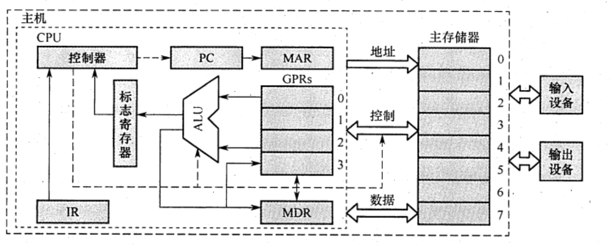
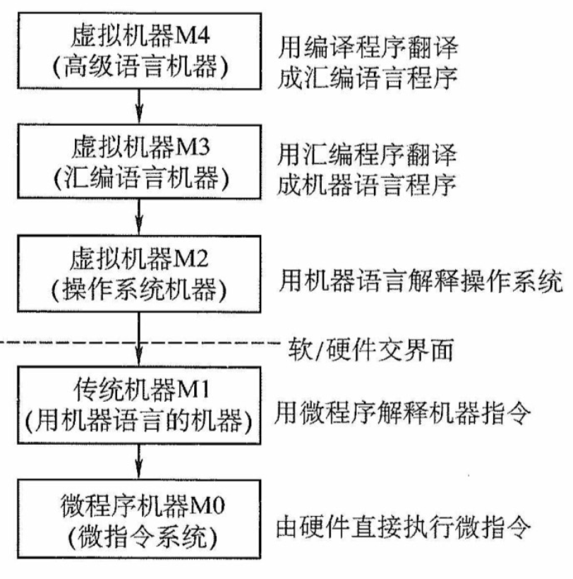
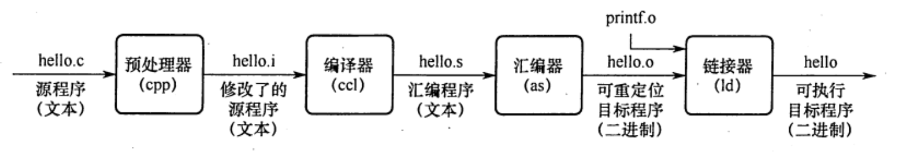

2022.08.19
计算机系统=软件(硬件上运行的程序和相关数据与文档)+硬件(有型的物理设备)
软硬件实现功能逻辑上等效，用硬件解决问题效率高，成本低
完整的计算机系统应包括（） A. 运算器、存儲器、挖制器 B. 外部设备和主机 C. 主机和应用程序 D. 配套的硬件设备和软件系统
【答案】：D。计算机=软件+硬件
四个基本特征
早期的冯诺依曼机是以运算器为中心的，现在是以存储器为中心！
图为冯·诺依曼结构的模型机。CPU包含ALU、通用寄存器组GPRs、标志寄存器、控制器、指令寄存器IR、程序计数器PC、存储器地址寄存器MAR和存储器数据寄存器MDR。图中从控制器送出的虚线就是控制信号，可以控制如何修改PC以得到下一条指令的地址，可以控制ALU执行什么运算，可以控制主存是进行读操作还是写操作（读/写控制信号）。

冯·诺伊曼机的基本工作方式是（） A. 控制流驱动方式 B. 多指令多数据流方式 C. 堆栈操作 D. 存储器按内容选择地址
【答案】：A
【2009 统考真题】冯•诺依曼计算机中指令和数据均以二进制形式存放在存储器中，CPU 区分它们的依据是( )。 A. 指令操作码的译码结果 B. 指令和数据的寻址方式 C. 指令周期的不同阶段 D. 指令和数据所在的存储单元
【答案】：C
【2019统考真题】下列关于冯 • 诺依曼计算机基本思想的叙述中，错误的（） A. 程序的功能都通过中央处理器执行指今实现 B. 指令和数据都用二进制数表示，形式上无差别 C. 指令按地址访问，数据都在指令中直接给出 D. 程序执行前，指令和数据需预先存放在存储器中 【答案】：C
输入设备
输出设备
存储器
存储器种类：主存(CPU直接访问)，辅存(属于IO设备)
主存组成
存储体M
存储体包含存储单元，存储单元包含存储元件，每个存储元件存储一个0或1，存储单元存储一串二进制代码，叫做存储字，存储字的长度叫存储字长。存储字长可以是n字节。
地址寄存器MAR
MAR二进制位数反映了存储单元数量
数据寄存器MDR
MDR二进制位数反映了存储字长
时序逻辑
存取方式:按地址存取
MAR与MDR之前在主存中，现在通常在CPU内
运算器
控制器
| 存储器 | 运算器 | 控制器 |
|---|---|---|
| M | ALU | PC |
| MAR | ACC | IR |
| MDR | MQ | CU |
| X | ||
| IX | ||
| BR | ||
| PSW |
CPU不包括()。
A.地址寄存器
B.指令寄存器(IR)
C.地址译码器
D.通用寄存器
【答案】：C
关于相联存储器，下列说法中正确的是（C)。
A.只可以按地址寻址
B.只可以按内容寻址
C.既可按地址寻址又可按内容寻址
D.以上说法均不完善
系统软件：操作系统OS、数据库管理系统DBMS、语言处理程序、分布式软件系统、网络软件系统、标准库程序、服务性程序等。
应用软件：为解决某个应用领域中的各类问题而编制的程序，如各种科学计算类程序、工业设计类程序、数据统计与处理程序等。
机器语言，汇编语言，高级语言
汇编程序(汇编->机器语言)；解释程序；编译程序
下列()不属于系统软件。
A.数据库系统
B.操作系统
C.编译程序
D.以上3种都属于系统程序
【答案】：A，数据库系统是指在计算机系统中引入数据库后的系统，一般由数据库、数据库管理系统、应用系统、数据库管理员构成，其中数据库管理系统是系统程序。
【2016统考真题】将高级语言源程序转换为机器级目标代码文件的程序是（)。
A.汇编程序
B.链接程序
C.编译程序
D.解释程序
翻译程序是指把高级语言源程序转换成机器语言程序（目标代码）的软件。翻译程序有两种：一种是编译程序，它将高级语言源程序一次全部翻译成目标程序。另一种是解释程序，它将源程序的一条语句翻译成对应的机器目标代码，并立即执行，翻译一句执行一句，并且不会生成目标程序。汇编程序也是一种翻译程序，它把汇编语言源程序翻译为机器语言程序。->C

存储程序工作方式
从源程序到可执行程序

#include命令后边的.h内容插入程序文件指令执行过程的描述
(PC)->MAR->M->MDR->IR;(PC)+1->PCOP(IR)->CUCU->MAR->M->MDR->ACC例题：
【2016统考真题】将高级语言源程序转换为机器级目标代码文件的程序是（）。 A. 汇編程序 B. 链接程序 C. 编译程序 D. 解释程序
【答案】：C
【2015统考真题】计算机硬件能够直接执行的是（）。 I. 机器语言程序 II. 汇编语言程序 III. 硬件描述语言程序
【答案】：I